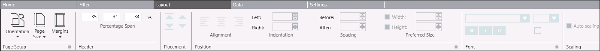
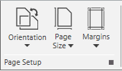
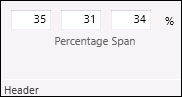
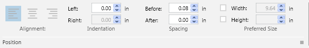
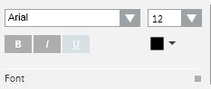

Layout Tab
The Layout tab allows you define the format of layout elements of a Report Definition. It contains the following group boxes:

Page Setup Group Box
The Page Setup group box allows you to set the orientation, page size, and margin of the Report Definition.

Orientation
The Orientation menu contains two submenus:
- Portrait: long vertical edge
- Landscape: long horizontal edge (default)
Page Size
The Page Size menu contains several pre-configured sizes including: A3, A4, A5, Letter, and so on. The default page size is A4.
Margins
The Margins menu has four preconfigured margins with values displayed for quick selection:
- Normal (default)
- Narrow
- Moderate
- Wide
Header/Footer Group Box
The Header/Footer group box allows you to customize the width of the header/footer sections of the report.
The text of the group box and values change depending on the header/footer selected in the report definition.
For example, on selecting the header, the title displays as Header and vice versa.

The group box contains 3 fields in which you can specify the width of the header/footer section.
The values are specified in percentage and the sum of the values in all the 3 fields is 100%.
If you specify 100 in any of the fields, then the values in the other 2 fields is automatically updated to 0.
Placement Group Box
Using the Placement group box you can rearrange the position of the report elements in a Report Definition by selecting an element and using the icons: Move up  , Move down
, Move down  , Move to top
, Move to top  , and Move to bottom
, and Move to bottom  .
.
When there is only one element present or if there are multiple elements but none is selected, then all four icons are unavailable.
Position Group Box
The Position group box allows you to adjust the position of the layout elements of a Report Definition.

Position Group Box | |
Alignment | Refers to the placement of objects or layout elements on the report page. The different alignments are: Left, Center, and Right. |
Indentation | Allows you to set the distance between the report page margin and the actual placement of the element. |
Spacing | Allows you to set the space before and after the layout elements. |
Width | Allows you to adjust the width of a layout element (logo and plot only). |
Height | Allows you to adjust the height of a table/plot (logo and plot only). |
Font Group Box
The Font group box allows you to apply a font type, size, style and/or color to the layout elements such as a label or a table.
The Font group box becomes enabled only when you have inserted a label or a table in a Report Definition template while configuring a Report Definition.

Auto-scaling Group Box
Selecting the Auto-scaling check box adjusts the column width automatically in PDF documents that are generated when you execute a report.
If the Auto-scaling check box is not selected, then the PDF may not display all table columns.